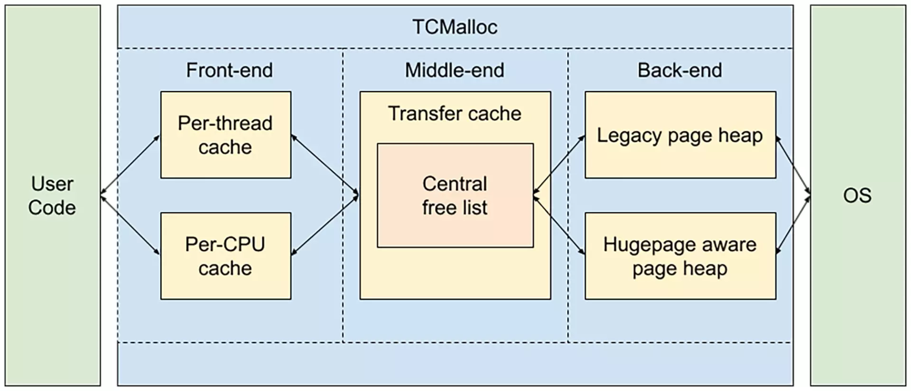
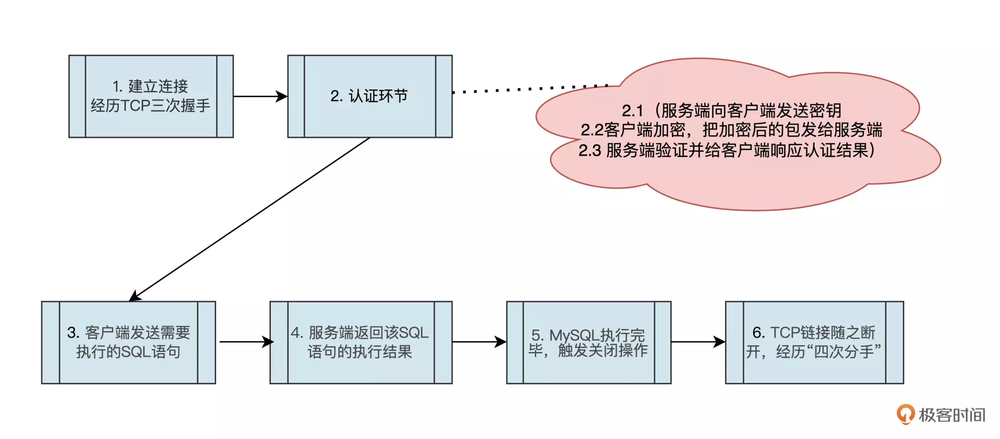
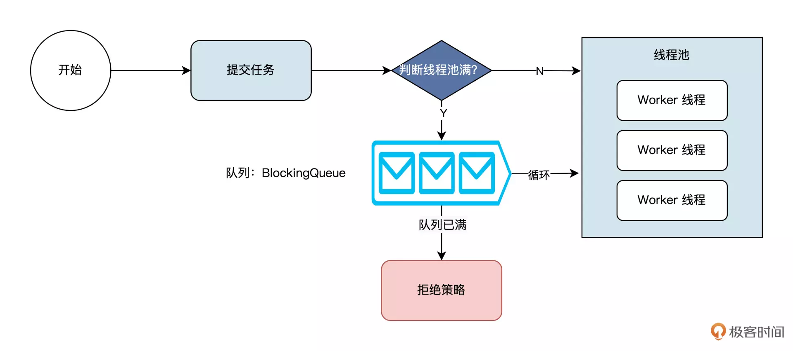
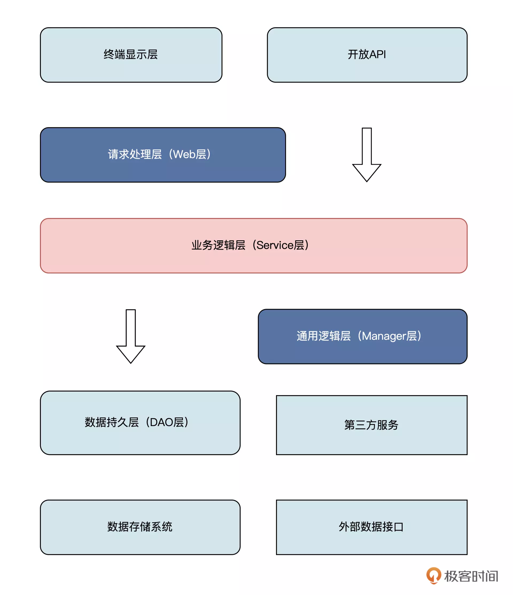
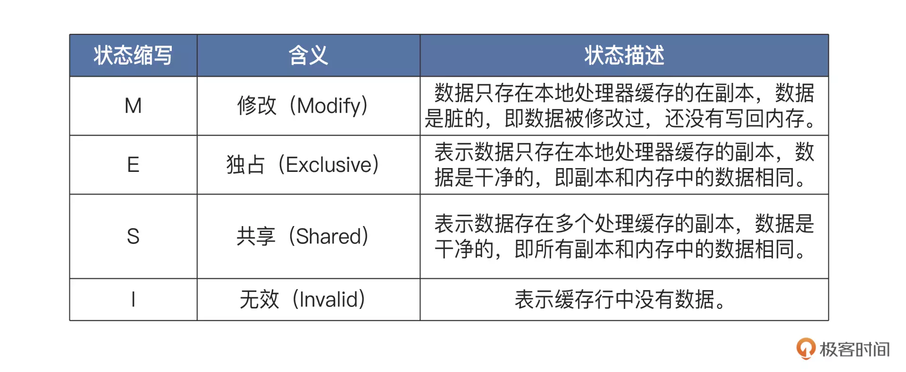
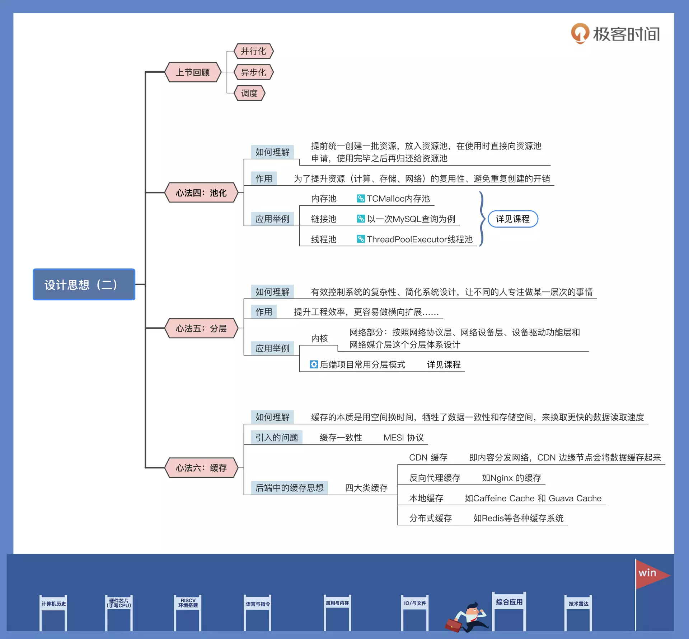

- 00 开篇词 练好基本功，优秀工程师成长第一步.md.html
- 01 CISC & RISC：从何而来，何至于此.md.html
- 02 RISC特性与发展：RISC-V凭什么成为“半导体行业的Linux”？.md.html
- 03 硬件语言筑基（一）：从硬件语言开启手写CPU之旅.md.html
- 04 硬件语言筑基（二）_ 代码是怎么生成具体电路的？.md.html
- 05 指令架构：RISC-V在CPU设计上到底有哪些优势？.md.html
- 06 手写CPU（一）：迷你CPU架构设计与取指令实现.md.html
- 07 手写CPU（二）：如何实现指令译码模块？.md.html
- 08 手写CPU（三）：如何实现指令执行模块？.md.html
- 09 手写CPU（四）：如何实现CPU流水线的访存阶段？.md.html
- 10 手写CPU（五）：CPU流水线的写回模块如何实现？.md.html
- 11 手写CPU（六）：如何让我们的CPU跑起来？.md.html
- 12 QEMU：支持RISC-V的QEMU如何构建？.md.html
- 13 小试牛刀：跑通RISC-V平台的Hello World程序.md.html
- 14 走进C语言：高级语言怎样抽象执行逻辑？.md.html
- 15 C与汇编：揭秘C语言编译器的“搬砖”日常.md.html
- 16 RISC-V指令精讲（一）：算术指令实现与调试.md.html
- 17 RISC-V指令精讲（二）：算术指令实现与调试.md.html
- 18 RISC-V指令精讲（三）：跳转指令实现与调试.md.html
- 19 RISC-V指令精讲（四）：跳转指令实现与调试.md.html
- 20 RISC-V指令精讲（五）：原子指令实现与调试.md.html
- 21 RISC-V指令精讲（六）：加载指令实现与调试.md.html
- 22 RISC-V指令精讲（七）：访存指令实现与调试.md.html
- 23 内存地址空间：程序中地址的三种产生方式.md.html
- 24 虚实结合：虚拟内存和物理内存.md.html
- 25 堆&栈：堆与栈的区别和应用.md.html
- 26 延迟分配：提高内存利用率的三种机制.md.html
- 27 应用内存管理：Linux的应用与内存管理.md.html
- 28 进程调度：应用为什么能并行执行？.md.html
- 29 应用间通信（一）：详解Linux进程IPC.md.html
- 30 应用间通信（二）：详解Linux进程IPC.md.html
- 31 外设通信：IO Cache与IO调度.md.html
- 32 IO管理：Linux如何管理多个外设？.md.html
- 33 lotop与lostat命令：聊聊命令背后的故事与工作原理.md.html
- 34 文件仓库：初识文件与文件系统.md.html
- 35 Linux文件系统（一）：Linux如何存放文件？.md.html
- 36 Linux文件系统（二）：Linux如何存放文件？.md.html
- 37 浏览器原理（一）：浏览器为什么要用多进程模型？.md.html
- 38 浏览器原理（二）：浏览器进程通信与网络渲染详解.md.html
- 39 源码解读：V8 执行 JS 代码的全过程.md.html
- 40 内功心法（一）：内核和后端通用的设计思想有哪些？.md.html
- 41 内功心法（二）：内核和后端通用的设计思想有哪些？.md.html
- 42 性能调优：性能调优工具eBPF和调优方法.md.html
- 先睹为快：迷你CPU项目效果演示.md.html
- 加餐01 云计算基础：自己动手搭建一款IAAS虚拟化平台.md.html
- 加餐02 学习攻略（一）：大数据&云计算，究竟怎么学？.md.html
- 加餐03 学习攻略（二）：大数据&云计算，究竟怎么学？.md.html
- 加餐04 谈谈容器云与和CaaS平台.md.html
- 加餐05 分布式微服务与智能SaaS.md.html
- 国庆策划01 知识挑战赛：检验一下学习成果吧！.md.html
- 国庆策划02 来自课代表的学习锦囊.md.html
- 国庆策划03 揭秘代码优化操作和栈保护机制.md.html
- 温故知新 思考题参考答案（一）.md.html
- 用户故事 我是怎样学习Verilog的？.md.html
- 结束语 心若有所向往，何惧道阻且长.md.html
- 捐赠
41 内功心法（二）：内核和后端通用的设计思想有哪些？
你好，我是LMOS。
上节课，我们学习了并行化、异步化、调度思想这三种内功心法，无论是内核设计还是后端场景里，你总能找到这些“心法”的影子。看完以后是不是感觉有点意犹未尽？
这节课，我再给你分享三种设计思想，分别是池化、分层和缓存。无论是操作系统内核，还是后端当中，这三种设计思想也是通用的。这两节课属于偏抽象的架构思想，因此建议你学完之后结合自己的具体工作实践进一步理解、消化。好，让我们进入正题。
内功心法之池化
如果你是一家水果店的店长，肯定要走批发采购、平时贩卖零售的路线。要是有顾客来选购一种水果的时候，我们才去采购、运输过来实在是费事费力，太过低效。但如果我们提前采购好一批水果，顾客来购买的时候我们直接拿给顾客，这样就可以有效节约时间和运输成本。
这种降低开销的思路，在工程中也是类似的。为了提升资源（计算、存储、网络）的复用性、避免重复创建的开销，我们通常会提前统一创建一批资源，放入资源池，在使用时直接向资源池申请，使用完毕之后再归还给资源池，这样的思路我们称为池化思想。
之前讲内存管理的时候，我们提到过，为了减少内存分配或销毁时的时间开销，避免内存碎片的产生，我们会维护一个内存链表。- 当编程语言申请内存的时候，OS内核就会根据内存分配算法，在链表中查找一段可以分配的内存分配出去。等到内存需要释放的时候，不但需要进行查找、释放操作，还需要整理，这些操作都比较耗时。怎么解决这个问题呢？
答案就是内存池技术，我们可以提前申请一大块内存来进行统一管理，然后每次需要分配内存时，都从这块内存中取出，并标记下这块内存被用了，释放时标记此内存被释放了。请注意，释放时，并不是真的把内存释放给了操作系统。只有等到一大块内存都空闲的时候，才会释放给操作系统。这样，就减少了分配、释放的操作次数，从而提高了效率。
后端领域中，我们也会经常使用池化思想。比如内存池、链接池、线程池等等，都是后端常用的池化思想的工程应用方式。
内存池
我们先从内存池说起。其实内存池也我们的老朋友了，因为之前讲[Golang内存管理]时学过，编程语言运行时库中也会实现内存池。其实Golang的内存池的设计也是借鉴了TCMalloc内存池的管理思路。
为了更好地理解内存池的设计思路，首先让我们来看一下TCMalloc的架构设计吧：

Back-end会向操作系统申请内存，当用户代码使用TCMalloc内存池时则会复用Back-end申请的内存。内存不够的时候，TCMalloc还会继续向操作系统申请更多内存；在用户代码释放内存的时候，TCMalloc也会主动进行内存回收。
连接池
接着我们说说连接池。连接池的作用是管理链接的创建和销毁，以及复用链接。从事后端开发的同学，最常见的可能就是数据库连接池了，那我们为什么要使用数据库连接池呢？
要解答这个问题，我们可以先设想一下如果没有连接池，一次查询MySQL都会经历哪些步骤：
第一步，建立链接，MySQL协议是基于TCP的，所以MySQL Client和MySQL Server端建立链接的时候，也会经历TCP的三次握手。
第二步是认证环节。记不记得，我们链接MySQL的时候还指定了帐号密码？没错，这里我们还需要进行认证。根据 MySQL官方文档中的协议章节，我们可以把认证部分大概细分成以下三个部分：
- 服务端向客户端发送密钥；
- 客户端使用密钥加密用户名、密码等信息，然后再把加密后的包发给服务端（这样可以防止被中间人盗取到明文帐号密码）；
- 服务端再根据客户端发送过来的包，验证是否是合法的帐号密码，然后给客户端响应认证结果。
第三步，客户端发送需要执行的SQL语句。
第四步，服务端返回该SQL语句的执行结果。
第五步，MySQL执行完毕，触发关闭操作。
第六步，TCP链接随之断开，这时候就会经历“四次分手”啦。

我们发现，整个过程中如果不使用连接池复用连接，每执行一条SQL语句就会在网络IO、认证之类的事情上浪费很多资源和时间。但如果使用连接池，复用了这些连接的话，就只需要执行SQL语句的请求响应开销了，这显然是一个不错的思路。
其实连接池在后端中很常用，比如Java的httpclient、Golang的net/http包中都在使用连接池的思想来提升HTTP请求的性能。如果对这些有兴趣，你可以课后自行探索。
线程池
线程中执行的就是我们写的应用程序，在后端领域中，为了提升响应速度，我们经常会为每一个请求分配一个独立的线程来处理。不过别忘了，线程的创建、销毁、调度都是有开销的，所以当我们创建的线程比较多的时候，系统性能也有可能会下降。
这时候，还得继续引入我们的池化思想，开启“复用大法”。思路是这样的：我们可以通过提前创建一批线程，当需要使用的时候直接从里面取一个“现成的”线程，用完之后归还。
没错，Java J.U.C中ThreadPoolExecutor线程池的核心设计思路也是类似的，你可以点击文稿中的简化版ThreadPoolExecutor线程池的设计图来对照理解一下。

内功心法之分层
计算机科学家Butler Lampson有一句名言：All problems in computer science can be solved by another level of indirection.
说的是在计算机科学中，所有问题都可以通过引入一个分层来解决。分层可以有效控制系统的复杂性、简化系统设计，让不同的人专注做某一层次的事情。
想象一下，如果你要设计一款网络程序，却没有分层，该是一件多么痛苦的事情，因为这要求你必须是一个通晓网络的全才：要知道各种网络设备的接口是什么样的，以便将数据包发送给它；要关注数据传输的细节；还需要处理类似网络拥塞，数据超时重传这样的复杂问题；当然了，你更需要关注数据如何在网络上安全传输，避免数据被别人窥探和篡改。
而有了分层的设计，你只需要专注设计应用层的程序就可以了。其他的问题，都可以交给下面几层来完成。
分层之后，有些层具有很高的复用性，可以提升工程效率。比如，我们在设计系统 A 的时候，发现某一层具有一定的通用性，那么我们可以把它抽取独立出来，在设计系统 B 的时候用起来，这样可以减少研发周期，提升研发的效率。
分层架构还更容易做横向扩展。很多时候如果系统没有一个好的分层，流量增加时，我们就需要对整个系统进行扩展了，这样开销其实是比较大的。
举个例子，比如有一段代码里面需要进行图形图像计算，这时候CPU开销可能会比较高。
如果没有分层，代码和业务逻辑耦合在了一起，就需要扩容整个服务，这显然是没必要的开销。但如果我们做了合理的分层，把计算密集型的代码全部收敛到同一层，这样进行扩展时，我们就可以轻松抽离这部分代码，这不但节约了资源，还提升了系统的可维护性和可扩展性。
操作系统里处处可见分层思想。比如Linux内核中，对网络部分就是按照网络协议层、网络设备层、设备驱动功能层和网络媒介层这个分层体系来设计的。这样设计的好处是，网络驱动功能层主要通过网络驱动程序实现。这种分层结构与网络协议的结构匹配，既能简化数据包处理流程，又便于扩展和维护。
除了内核系统，后端开发里分层也很常见。根据《阿里巴巴Java 开发手册》中的建议，我们可以看到后端项目常用的分层模式如下图：

对照示意图，我们分别看看不同层起到的作用。
终端显示层，这一层主要用于各端模板渲染并执行显示的层。当然，前后端分离之后，这个层有时候也会被前端技术栈所接管。开放接口层用于将 Service 层方法封装成开放的接口，同时进行网关安全控制以及流量控制等工作。
接着是请求处理层，也就是Web 层，主要是对访问控制进行转发，做一些基础的参数校验和一些简单的业务处理工作。再往下是Service 层，用于承载主要的业务逻辑。
之后是通用业务处理层，也可以叫Manager 层。这一层主要有两点要注意。首先，你可以将原先 Service 层的一些通用的能力（比如与缓存和存储交互策略、中间件的接入）放到这一层；其次，你也可以在这一层封装对第三方接口的调用，比如调用支付服务，调用审核服务等。
接下来是数据访问层，我们通常叫它DAO 层，用来与底层 MySQL、Redis、MongoDB、Elasticsearch、HBase 等数据库进行数据交互。
最后还有外部接口或第三方平台，包括其它部门的 RPC 开放接口、基础平台、其它公司的 HTTP 接口。
内功心法之缓存
在计算机系统中，我们经常会遇到读写速度不匹配的场景。为了解决内存读写速度不匹配的问题，能不能把一部分常用的数据，放在读取速度更快的存储空间里呢？这个想法就是缓存思想的雏形。
当然引入了缓存之后，在传递的过程中，缓存数据和原始数据可能会因为各种原因导致不一致，这又引入了缓存一致性的问题。
在 SMP 系统中，处理器的每个核都有独立的一级缓存，因此同一内存位置的数据，可能在多个核一级缓存中存在多个副本，所以存在数据一致性的问题。目前主流的缓存一致性协议是 MESI 协议及其衍生协议。

为了维护缓存一致性，处理器之间需要通信，MESI 协议提供了以下消息：
- Read读：包含想要读取的缓存行的物理地址。
- Read Response读响应：包含读消息请求的数据。读响应消息可能是由内存控制器发送的，也可能是由其他处理器的缓存发送的。如果一个处理器的缓存行有想要的数据，并且处于修改状态，那么必须发送读响应消息。
- Invalidate使无效：包含想要删除的缓存行的物理地址。所有其他处理器必须从缓存行中删除对应的数据，并且发送使无效确认消息来应答。
- Invalidate Acknowledge使无效确认：处理器收到使无效消息，必须从缓存行中删除对应的数据，并且发送使无效确认应答消息。
- Read Invalidate读并且使无效：包含想要读取的缓存行的物理地址，同时要求从其他缓存中删除数据。它是读消息和使无效消息的组合 ，需要接收者发送读响应消息和使无效确认消息。
- Writeback写回：包含想要写回到内存的地址和数据。
由此我们看到，为了保证缓存在各处理器间的一致性，需要进行核间消息的处理。因此即使像原子变量这种看似没有消耗的同步机制，也是有开销的。
缓存思想在后端中也十分常用，根据应用场景，我们可以大致把缓存分为四大类：第一类，CDN 缓存。CDN 即内容分发网络，CDN 边缘节点会将数据缓存起来；第二类是反向代理缓存，比如 Nginx 的缓存；第三类是本地缓存，典型例子有 Caffeine Cache 和 Guava Cache；最后就是分布式缓存，Redis等各种缓存系统都归属于这一类。
重点回顾
这节课，我们主要学习了池化、分层和缓存这三种思想。我来带你回顾下重点。
内存池、链接池、线程池等等，都是后端常用的池化思想的工程应用方式，这可以帮助我们复用资源、提高资源使用效率。
分层思想可以让复杂项目的结构变得更清晰，学过业界常用的后端项目设计规范之后，我想你更能体会到这一点。
缓存思想则告诉我们可以通过缓存提高数据读取性能，解决内存读写速度不匹配的问题。不过另一方面，这可能引入缓存一致性的风险。因此在实际工程应用的时候，我们一定要仔细权衡。
我还把这节课的要点画成了导图，供你参考：

思考题
这节课，我们学习了池化、分层、缓存这三招内功心法，请你思考一下在你的日常工作中有没有哪里用到了这几类设计思想呢？
欢迎你在留言区跟我一起交流，如果这节课对你有启发，别忘了分享给身边更多朋友。
© 2019 - 2023 Liangliang Lee. Powered by gin and hexo-theme-book.